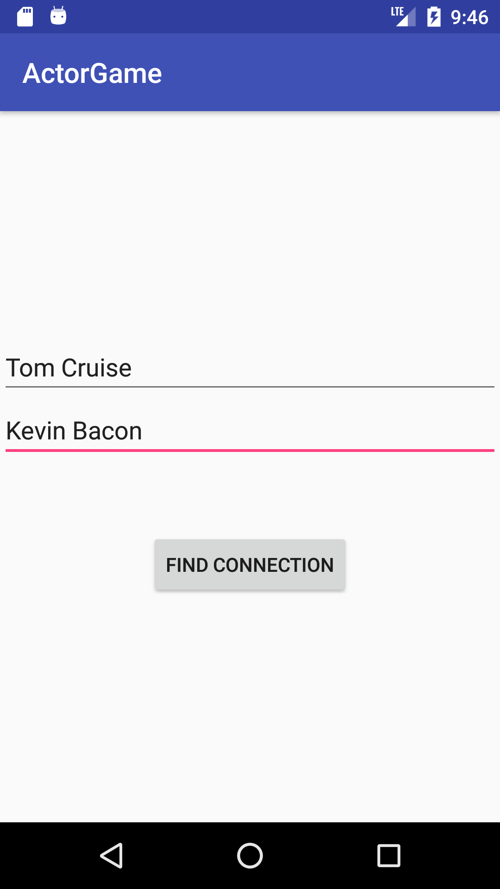
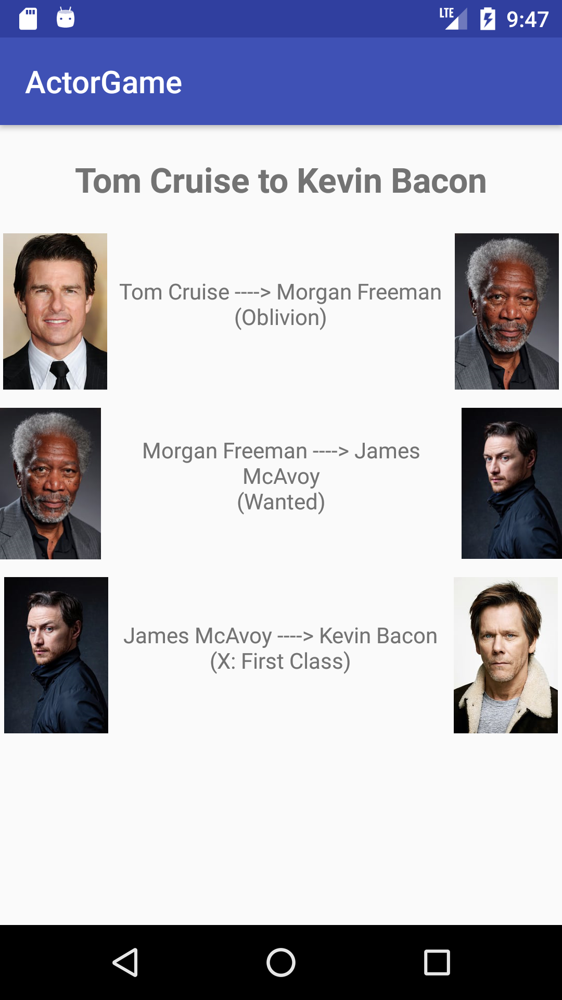

I am a programmer and software engineering student at McMaster University. I like to play badminton and werewolf, one of my favourite board games. Currently, I'm finishing up my third year while working as a Research Engineer in a front-end role.
If you want to reach me, don't hesitate to send me an email.
I like making things.
Here are some of the projects I've worked on over the past few years:
Six Degree of Everyone: An android application that can show the connection between any two top 5000 actors. Actor and movie data was taken from this dataset. Vertices of an undirected graph were used to represent the actors and the edges between them movies. Breadth first search was used to find the shortest path between two actors, and the tmdb api was used to retrieve actor images.


Developed the control logic and program for the Sitallite, a fully controllable ballon craft that was deployed at VanWyn. Implemented C++ programs utilising the Pozyx system and multiple microcontrollers to enable wireless control of the drone. In order to fine tune the flight, I also developed a JavaFX based GUI that could perform flight tests on the drone and output flight information to a file. Here is a video of the first flight:
Worked with a team of 4 to develop ScanShop, an Android application that can scan a product's barcode (UPC/EAN), then search through a dataset to display retailers that sell the item online, sorted by descending order of selling price. For this project, I implemented a JSON parser that is able to translate product information from zipped JSON files to product objects. A trie was implemented to search through the dataset, allowing users to query products using substrings of the product name, rather than exclusively scanning the product's barcode.
Recreated 'Color Switch', a popular mobile game, on the web. Implemented using Javascript and the p5 library. If you wish, you may play it here.